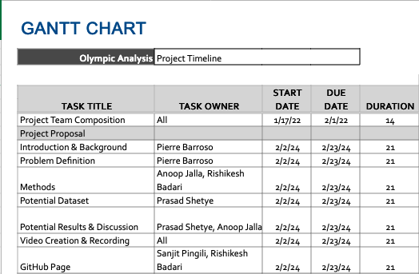
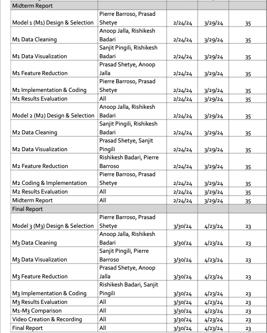

Predictive Analysis for Olympic Wins
Introduction/Background
The Olympics, a pinnacle of athletic competition, attract global talent across various sports. Predictive modeling, born from academic and analytical intrigue, aims to forecast outcomes like medal distributions.
Literature Review
- Machine learning techniques examine socio-economic factors' influence on Olympic success [1].
- Heuristic methods employ machine learning to predict medal counts based on historical data, athlete demographics, and pre-Games expectations [2].
- A study focuses on India, analyzing factors impacting its Olympic performance [3].
Dataset: Sourced from Kaggle, it contains diverse Olympic data, facilitating the development of predictive models for understanding and forecasting medal wins.
Kaggle Dataset
Problem Definition
Predicting medal likelihood in Olympic sports is challenging due to various factors like age, gender, physical attributes, and historical context. Crucial for optimizing athlete performance, strategic planning, and enhancing spectator experience.
Motivations
- Performance Optimization: Identifying key performance factors for improved training efficiency and competition outcomes.
- Resource Allocation: Informed decisions on resource distribution, prioritizing athletes with higher medal prospects.
- Enhancing Spectator Experience: Providing fans with insights on likely medal winners to increase engagement and interest.
Methods
Data Preprocessing Methods
- Data set extension: To incorporate data from recent Olympic Games, such as Tokyo 2020 and Beijing 2022, into the existing dataset.
- Cleaning Partial Entries: To ensure data integrity by addressing missing, incomplete, or inconsistent entries.
- Identifying most correlated features to performance for isolating variable during training.
- Resampling data to account for class imbalances.
ML Algorithms/Models
- Gradient Boosted Trees
- Logistic Regression
- K Means Clustering
- Gaussian Mixture Model
Results and Discussion
- Accuracy: To get a baseline understanding of how many of our predictions were correct of the athlete earning a medal.
- Precision: To understand how correct our positive predictions were.
- Recall: To understand how many of the true positive cases were properly identified.
- F1 Score: To balance precision and recall with a unified score which will allow us to identify which set up of the model performs the best.
Expecting high accuracy due to class imbalance. Goal is to achieve F1 score of 0.7 or higher.
GANTT CHART
Below are the GANTT charts depicting the project timeline:

